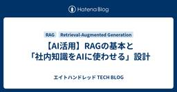
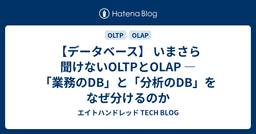

エイトハンドレッド TECH BLOG
https://eight-hundred-800-dev.hatenablog.com/
エイトハンドレッド TECH BLOG
フィード

【AI活用】RAGの基本と「社内知識をAIに使わせる」設計
エイトハンドレッド TECH BLOG
「社内のマニュアルをAIに読ませたい」。この相談は本当によく聞きます。ところが実際に組んでみると、期待したほど答えが返ってこない。原因はモデルの性能ではなく、たいていRAGの設計側にあります。 3行まとめ RAG（Retrieval-Augmented Generation）は、AIが答える直前に必要な知識を検索して渡す仕組み。社内文書やマニュアルをAIに参照させるための設計パターンです。 全文をコンテキストに詰め込むのではなく、チャンク分割 → ベクトル化 → 意味検索 → 注入という流れで、必要な部分だけを取り出します。 精度を決めているのはモデルではなく「何を・どう分割し・どう検索するか…
1日前

【データベース】 いまさら聞けないOLTPとOLAP ― 「業務のDB」と「分析のDB」をなぜ分けるのか
エイトハンドレッド TECH BLOG
3行まとめ OLTP（業務システム用DB）とOLAP（分析用DB）は、得意な処理がそもそも正反対です。 同じDBで両方をやろうとすると、業務の応答が遅くなったり、分析クエリが重すぎて業務を止めたりする事故が起きます。 DBを分ける理由が分かると、スタースキーマのような分析基盤側の設計思想も理解しやすくなります。 概要 「同じデータなんだから、DBは1つでいいのでは？」という素朴な疑問は、業務システムのDBと分析基盤のDBの違いを知らないと誰もが一度は持ちます。この記事は、その違いを説明できるようになりたい方に向けて、OLTPとOLAPの設計思想の違いと、DBを分けないと何が起きるかを整理します…
3日前

【データモデリング】 いまさら聞けないSCD（緩やかに変化するディメンション） ― 異動前の実績をどう扱うか
エイトハンドレッド TECH BLOG
3行まとめ SCD（緩やかに変化するディメンション）は、「顧客の所属部署が変わったら、過去の実績はどちらの部署に集計するか」という悩みに答えるための考え方です。 代表的な対処法にType1（上書き）・Type2（履歴を行で残す）・Type3（前の値を列で持つ）があります。 どれを選ぶかは「過去をそのときの姿のまま再現したいか」で決まります。 概要 「異動前の実績はどっちの部署に集計する？」という現場の悩みへの答えがSCDですが、言葉を知らずに毎回その場しのぎで対応しがちです。この記事は、BIレポートで「なぜかこの人の異動前の実績が今の部署に付け替わっている」といった違和感に遭遇したことがある方…
5日前

【データベース設計】 いまさら聞けない主キー・外部キー・サロゲートキー ―"IDカラムなんとなく"から卒業する
エイトハンドレッド TECH BLOG
3行まとめ 主キーはテーブル内で行を一意に識別する値、外部キーは他テーブルとの関連を示す値です。 社員番号のような「業務キー」をそのまま主キーにすると、業務ルール変更のたびにテーブル設計が揺らぐ危うさがあります。 サロゲートキー（連番などの代理キー）を使うと、業務の変化に強いテーブルになります。 概要 とりあえずID列を振ってはいるものの、業務キーとの違いや使い分けを説明できない、というのはよくある状態です。この記事は、テーブル設計でキーの張り方を今まで深く考えたことがない方に向けて、主キー・外部キーの役割と、サロゲートキーを使う理由を整理します。 主キーと外部キーの役割 主キーは、1つのテー…
8日前
【データモデリング】 いまさら聞けないディメンショナルモデリング vs データボルト ― モデリング流派の地図
エイトハンドレッド TECH BLOG
3行まとめ ディメンショナルモデリングとデータボルトは、どちらも「分析基盤のためのテーブル設計流派」ですが、優先する価値がまったく違います。 ディメンショナルモデリング（スタースキーマなど）は分析のしやすさを、データボルトは変更への強さと監査対応を優先します。 どちらか一方が正解ではなく、要件（分析しやすさか、変更耐性か）や組織の規模で選ぶものです。 概要 「うちはデータボルトで」と言われて頷いたものの、スタースキーマと何が違うのか実は曖昧、というのはよくある状態です。この記事は、DWH・分析基盤の設計に関わり始めた方や、モデリング手法の選び方に迷っている方に向けて、ディメンショナルモデリング…
8日前
【SQL Server】 いまさら聞けないSQL Server ― 頭文字だらけの"SSナントカ"を一度で整理する
エイトハンドレッド TECH BLOG
3行まとめ SQL Serverは単体の製品ではなく、SSMS・SSIS・SSAS・SSRSなどのツール群を含む「製品ファミリー」です。 エディションとライセンス体系を理解しておかないと、コストや機能面で想定外のつまずきが起きます。 Azure SQL Databaseは同じ「SQL Server」の名を冠しますが、運用の考え方が異なる別物と捉えた方が理解しやすいです。 概要 「SQL Serverは知っている」つもりでも、SSMS・SSIS・SSAS・SSRSが何者かは意外と説明できない、というのはよくある状態です。この記事は、SQL Serverに触れ始めたばかりの方や、SELECT *は…
11日前
【インフラ】 いまさら聞けないオンプレミス vs クラウド ―「どっちが良いか」より「何で選ぶか」
エイトハンドレッド TECH BLOG
3行まとめ オンプレミス vs クラウドの議論は「どっちが良いか」ではなく「何を基準に選ぶか」で考えると結論が出やすくなります。 コスト構造（初期投資か従量課金か）、運用体制、データ量の増減予測、セキュリティ要件が主な判断軸です。 「クラウドにすれば安くなる」という単純な思い込みは、移行後に想定外のコスト増を招くことがあります。 概要 移行案件で必ず出る論点ですが、二元論で語られがちで、実際は判断軸を持てるかどうかで結論が変わります。この記事は、オンプレミスからクラウドへの移行を検討している方や提案を受ける立場の方に向けて、コスト構造の違いとクラウド移行で費用が増える理由、判断軸の持ち方を整理…
11日前
【クラウド】 いまさら聞けないIaaS・PaaS・SaaS ― クラウドの"どこまで任せるか"を階層で理解する
エイトハンドレッド TECH BLOG
3行まとめ IaaS・PaaS・SaaSは「サーバー・OS・ミドルウェア・アプリのどこまでを事業者が持つか」という責任範囲のグラデーションです。 任せる範囲が広いほど楽になりますが、その分だけ自由にカスタマイズできる範囲は狭くなります。 どこまで任せるかを理解しておくと、運用負荷とコストのトレードオフを判断しやすくなります。 概要 提案書に当たり前のように出てくる3語ですが、責任範囲の線引きを説明できるかは別問題です。この記事は、クラウドサービスの提案や選定に関わり始めた方に向けて、3つの階層がそれぞれ何を任せているか、責任範囲の考え方と選択時のトレードオフを整理します。 サーバー・OS・ミド…
12日前
【クラウド】 いまさら聞けないマネージドサービス ―「運用が楽になる」の中身を分解する
エイトハンドレッド TECH BLOG
3行まとめ 「マネージドだから運用不要」という誤解は現場に多く、実際には肩代わりされる作業と手元に残る作業がはっきり分かれています。 バックアップ・パッチ適用・冗長化などは事業者側が担いますが、設計・チューニング・コスト管理は利用者側に残ります。 「運用ゼロ」ではなく「運用の中身が変わる」と捉えると、任せた先で何を見るべきかが分かりやすくなります。 概要 「マネージドだから運用不要」という誤解が現場に多く、実際に何が肩代わりされ、何が残るのかを整理する記事です。マネージドサービスの導入を検討している方や、導入後の運用体制を考える立場の方に向けて、事業者側がやること、利用者側に残ること、運用が楽…
12日前
【データベース設計】 いまさら聞けない正規化と非正規化 ― 第3正規形を"覚える"のをやめて"目的"で理解する
エイトハンドレッド TECH BLOG
3行まとめ 正規化は「データの矛盾を防ぐための整理法」、非正規化は「集計や参照を速くするための割り切り」です。 第1〜第3正規形は暗記対象ではなく、更新・挿入・削除のたびに起きる矛盾を防ぐための考え方です。 業務システムは正規化、分析基盤は非正規化と使い分けるのが実務の基本線です。 概要 資格試験や研修で正規形を暗記したきり、実務で「どこまで正規化すべきか」を自分の言葉で判断できる人は意外と少ないです。この記事は、DB設計やテーブル定義に関わり始めた方や、正規化の意味を「なんとなく」で通過してきた方に向けて、正規化が防ぎたい問題と、非正規化との使い分けの考え方を整理します。 正規化は何を防いで…
15日前
【データモデリング】 いまさら聞けないスタースキーマ ― なぜ分析基盤では正規化をあえて崩すのか
エイトハンドレッド TECH BLOG
3行まとめ スタースキーマは「速く集計するために、あえて正規化を崩す」分析基盤の定番設計です。 中心に数値を集めるファクトテーブル、周りに切り口を並べるディメンションテーブル、という単純な星形が基本形です。 Power BIなど多くのBIツールはスタースキーマを前提に最適化されているため、これに沿うだけで速度も保守性も上がります。 概要 業務システムの設計では「正規化しろ」と徹底的に叩き込まれます。ところが分析基盤・DWHの世界では、逆にデータを重複させる（非正規化する）スタースキーマが定番です。この一見矛盾した設計思想が、初めて分析基盤に触れる人のつまずきポイントになりがちです。 この記事は…
15日前
【Microsoft Fabric】 PowerShellで一括移行――FabricPipelineUpgrade入門
エイトハンドレッド TECH BLOG
3行まとめ Microsoft.FabricPipelineUpgrade モジュールを使うと、Import-AdfFactory | ConvertTo-FabricResources | Export-FabricResources という3段のパイプライン処理で一括移行できます。 Copy・Lookup・ストアドプロシージャ実行など一般的なパターンはカバーされますが、カスタムコネクタや複雑な式は手動フォローが必要です。 PowerShell 7.4.2以降と、ARM・Synapse・Fabricそれぞれのトークン取得が事前準備として必要になります。 はじめに 大量のパイプラインを抱えるA…
16日前
【生成AIパスポート】 受験者9万人時代――資格を「組織力」に変える設計
エイトハンドレッド TECH BLOG
生成AIパスポートの受験者数が、累計で9万人を超えました。AIリテラシーの「共通言語」として資格が広く普及した一方で、企業のAI活用は個人任せにとどまっています。この記事では、普及の数字と企業の実態のギャップを見たうえで、資格を組織の力に変えるために推進担当が何をすべきかを整理します。 生成AIパスポートは累計受験者92,738名・有資格者72,841名（2026年4月時点）、直近の合格率は79.35%まで拡大しました。 一方で商工中金の調査（2026年1月）では、生成AI利用を個人任せにする企業が64.9%、推進人材の不足が32.0%と、企業の活用は個人依存にとどまっています。 資格保有者は…
18日前
【生成AIパスポート】 2026年シラバス改訂――「陳腐化しない資格」はどう設計されたか
エイトハンドレッド TECH BLOG
生成AIの資格は、一度取れば一生使えるものだと思われがちです。ですが生成AIパスポートは、毎年シラバスを改訂し、合格済みの人向けに更新テストまで用意する方向へ舵を切りました。2026年2月試験から適用された新シラバスをもとに、「資格が古くならない仕組み」がどう設計されているのかを、保有者の視点で整理します。 生成AIパスポートは毎年2月を基本に年1回以上シラバスを改訂する方針で、2026年2月試験から新シラバスが適用されました。 2026年版ではRAGやAIエージェントの項目が新設され、AI事業者ガイドライン第1.1版・AI新法にも対応。有資格者向けの「資格更新テスト」も2026年2月から始ま…
18日前
【生成AIパスポート】 資格は「取る」から「使う」へ――オープンバッジで社内AI人材を可視化する
エイトハンドレッド TECH BLOG
資格は取得した時点がゴールになりがちです。ですが生成AIパスポートのオープンバッジは、「取った資格を可視化して使う」ところまで設計できる仕組みになっています。この記事では、そのバッジがどういう仕組みかを見たうえで、社内のAI人材可視化にどう組み込めるかを整理します。 生成AIパスポートは、ブロックチェーン技術を使った国際標準規格Open Badges準拠のデジタル証明書を発行し、資格は無期限で利用できます。 バッジは名刺記載が公式に認められ、フリーランス向けにはクラウドソーシング上での認証バッジ表示にも対応。「資格を持っている」ことを外部に証明しやすくなりました。 資格×バッジ×社内スキルマッ…
18日前
【Microsoft Fabric】 移行でハマるポイント集――非互換アクティビティと回避策
エイトハンドレッド TECH BLOG
3行まとめ グローバルパラメーターは移行の対象外で、Fabricの「変数ライブラリ」への手動移行が必要です。 Web・WebhookアクティビティでURLを動的式にしている場合、そのままでは移行できません。 Fabricに存在しないアクティビティは代替設計が必要で、Mapping Data FlowsはDataflow Gen2への変換になります。 はじめに 移行ツールが「完了」と表示しても、それは動作を保証するものではありません。実際に移行作業を進める中でハマったポイント・ハマりやすいポイントを整理しておきます。 想定する読者は、これからADFパイプラインの移行作業に着手する担当者です。この…
25日前
【生成AI】 「モデル競争」から「実行基盤競争」へ──GPT-5.6とChatGPT Workが示す2026年後半の分岐点
エイトハンドレッド TECH BLOG
2026年7月9日、OpenAIが新モデルファミリー「GPT-5.6」と自律型エージェント「ChatGPT Work」を同時に一般公開しました。同じ週のAnthropicや欧州委員会の動きと合わせて見ると、生成AIの競争軸が「モデルの賢さ」から「実業務で動かす実行力」へ移った一週間でした。この記事では、何が起きたのかと、導入する側が次に何を設計すべきかを整理します。 3行まとめ 7月9日、OpenAIがGPT-5.6（Sol / Terra / Luna の3階層）と自律型エージェントChatGPT Workを同時公開し、競争の軸が「モデルの賢さ」から「実業務での実行力」へ移りました。 Ant…
1ヶ月前
【Microsoft Fabric】 移行プロジェクトの進め方――コンサル視点のロードマップ
エイトハンドレッド TECH BLOG
3行まとめ 移行プロジェクトは、資産の棚卸しと不要パイプラインの整理から始めるとスコープが明確になります。 パリティギャップを洗い出し、低リスク・高パリティの資産から着手する優先順位付けが移行を計画的に進める鍵です。 単なる引っ越しではなく、命名規則やフォルダ構成を整備する好機と捉えると、数年戦えるデータ基盤への投資になります。 はじめに これまでの記事では、Fabricの機能やツールの使い方を中心に扱ってきました。シリーズの最後に、実際の提案経験を踏まえて「プロジェクトとしてどう進めるか」というマネジメント視点を整理します。 想定する読者は、Fabric移行プロジェクトの計画立案を担う、意思…
1ヶ月前
【Microsoft Fabric】 移行アシスタントを試す――既存ADFパイプラインの移行検証
エイトハンドレッド TECH BLOG
3行まとめ ADFの移行アシスタントは、既存のADFをFabricワークスペースに「マウント」するところから始まり、この時点では容量を消費しません。 パイプラインごとに「Ready」「Needs review」「Not compatible」の3段階でアセスメント結果が判定され、CSVにもエクスポートできます。 トリガーは無効状態で移行されるため、本番影響を気にせず安全に並行検証できます。 はじめに ADF/Synapse→Fabricの公式移行体験がプレビュー公開され、注目度が高まっています。実際に触ってみた記録として、移行アシスタントの使い方と挙動を整理します。 想定する読者は、自社のAD…
1ヶ月前
【Microsoft Fabric】 はじめてのパイプライン――Copy activityでデータ取り込み
エイトハンドレッド TECH BLOG
3行まとめ Fabricの無料試用版を使えば、契約なしでワークスペースとLakehouseを作成し、パイプラインを試せます。 Copy activityを使うと、CSVファイルをLakehouseのテーブルへ取り込む処理を数クリックで組めます。 取り込んだデータはSQLエンドポイントとPower BIの両方からすぐに確認でき、「取り込み→確認」を一気通貫で体験できます。 はじめに これまでの記事でFabricの全体像や料金体系を説明してきましたが、実際に手を動かして初めて実感できることも多くあります。今回は無料試用版で完結するハンズオンを紹介します。 想定する読者は、ADFでCopy acti…
1ヶ月前
【Microsoft Fabric】 Synapseユーザーの移行判断フレームワーク
エイトハンドレッド TECH BLOG
3行まとめ Synapseからの移行は「リフト&シフト」「モダナイゼーション」「ハイブリッド」の3つのアプローチに整理できます。 パリティ（Fabricで同等機能があるか）・規模・体制の3軸で、今すぐ動くべきか待つべきかを判断できます。 移行自体を決めきれない場合も、アセスメントだけなら低コストで現状把握ができ、単体で実行する価値があります。 はじめに ADF・Synapseへの機能強化は相対的に縮小傾向にあり、「今動いているから大丈夫」と放置するリスクが少しずつ大きくなっています。 想定する読者は、Synapseを本番運用しており、Fabricへの移行を検討すべきか判断に迷っている意思決定者…
1ヶ月前
【Microsoft Fabric】 ADF vs Fabric Data Factory 徹底比較
エイトハンドレッド TECH BLOG
3行まとめ Fabric Data Factoryは、ADFのパイプラインエンジンをほぼそのまま引き継いでいます。 Outlookメール送信やTeams通知、Copilotによるパイプライン作成支援など、Fabric側だけの機能も追加されています。 CI/CDはARMテンプレートからGit統合・デプロイパイプラインへと変わっており、ここが最も学び直しが必要な部分です。 はじめに Fabric Data Factoryは「次世代ADF」と位置づけられており、既存ADFユーザーが最も気にするのは「これまでの知識やパイプラインがどこまで通用するのか」という点です。 想定する読者は、ADFでパイプライ…
1ヶ月前
【Microsoft Fabric】 料金体系入門――F SKUと容量課金の考え方
エイトハンドレッド TECH BLOG
3行まとめ Fabricは「F SKU」という容量単位で課金され、確保したCU（Capacity Unit）の枠内で全ワークロードを動かす仕組みです。 Azure Data Factoryの多くの機能は使った分に応じた課金ですが、Fabricは使わない時間帯もF SKUを確保している限り課金が発生する点が異なります。 小さく始めたい場合は、最小構成のF2を選び、使わない時間帯は一時停止する運用が現実的な入口になります。 はじめに Fabricの導入検討では、必ずと言っていいほど料金の話になります。Azure Data Factoryの課金感覚に慣れていると、Fabricの容量課金モデルは最初分…
1ヶ月前
【Microsoft Fabric】 OneLakeとは何か――Lakehouse/Warehouseとの使い分け
エイトハンドレッド TECH BLOG
3行まとめ OneLakeは組織で1つの論理データレイクで、FabricのLakehouse・Warehouse・Power BIはすべてこの上のデータを参照します。 LakehouseとWarehouseは「非構造化データも扱うか」「SQL中心で運用するか」で使い分けます。 ショートカット機能とDirect Lake接続を使うと、データをコピーせずにそのまま活用できます。 はじめに Fabricの学習で最初につまずきやすいのが、OneLake・Lakehouse・Warehouseという聞き慣れない概念です。ここを整理しておくと、Power BIユーザーがFabricに触れる際の心理的なハー…
1ヶ月前
【Microsoft Fabric】 ADFやSynapseとの関係から見る全体像
エイトハンドレッド TECH BLOG
3行まとめ Microsoft Fabricは、ADF・Synapse・Power BIなどバラバラだったデータ関連サービスを1つのSaaSに統合したプラットフォームです。 OneLake・容量課金・ワークスペースという3つの概念を押さえると、Fabric内の各機能の位置づけが理解しやすくなります。 Fabricは「新しいツール」ではなく「既存ツール群の統合先」であり、Microsoftの今後の投資もFabricに集中していきます。 はじめに Microsoftのデータプラットフォームは、いまFabricへの集約が進んでいます。「ADFやSynapseは今後どうなるのか」という不安や疑問を持つ…
1ヶ月前
【AI活用】SLM（小規模言語モデル）という選択肢――大きいことは良いことか
エイトハンドレッド TECH BLOG
3行まとめ SLM（Small Language Model）は、パラメータ数を抑えた軽量な言語モデルで、定型処理・分類・要約などのタスクでLLMと遜色ない精度を出せる。 コスト・速度・オンプレミス運用の面でLLMより有利なため、すべてを最上位モデルに頼る運用はコスト最適化の観点から見直しが必要。 「適材適所」がAI運用コストを抑えるカギ。タスクの特性に応じてSLMとLLMを使い分けるルーティング設計が重要になる。 はじめに Claude・GPT-4・Geminiなどの大規模言語モデル（LLM）が普及する一方、軽量なSLM（Small Language Model）で十分なケースが多いという指…
1ヶ月前
【Claude】Anthropic初の「導入価格」――移行を促す価格戦略の読み方
エイトハンドレッド TECH BLOG
3行まとめ AnthropicはSonnet 5で、初めて期間限定の「導入価格」を採用しました（入力$2・出力$10、2026年8月31日まで。以降は標準価格の入力$3・出力$15）。 この時期はAnthropicがSECへ機密のIPO申請（S-1）を行った直後でもあり、業界全体のAIコスト削減競争のなかでの低価格投入という文脈があります。 モデル選定は「性能」だけでなく「価格の期限」「競合との比較」も含めた判断が必要になっています。導入検討には割引期間が好機です。 はじめに Sonnet 5では、Anthropicとして初めて期間限定の導入価格（プロモ価格）が採用されました。技術的な進化だけ…
1ヶ月前
【AI安全性】AIジェイルブレイクに"CVSS"は作れるか
エイトハンドレッド TECH BLOG
3行まとめ Fable 5停止騒動の一因は、ジェイルブレイク（AIの安全機構の回避手法）の深刻度を評価する業界共通の基準がなかったことだとAnthropicは主張しています。 Anthropicは、Amazon・Microsoft・GoogleらProject Glasswingのパートナーとともに、深刻度スコアリングの共通フレームワーク作りを進めています。評価軸は「能力向上度」「適用範囲の広さ」「悪用の容易さ」「発見の容易さ」の4つです。 ソフトウェア脆弱性管理がCVE/CVSSという共通言語で成熟してきた歴史を、AI安全性の分野がなぞり始めています。 はじめに Fable 5の停止では、同…
1ヶ月前
【Claude】サブスクで使えるのは1週間だけ？Fable 5の新しい提供形態
エイトハンドレッド TECH BLOG
3行まとめ 再開したFable 5は、Pro・Max・Team・一部Enterpriseプランで「週間利用上限の50%まで」という条件付きで2026年7月7日まで利用でき、以降はusage credits（従量課金）での提供に移行します。 APIの料金は入力$10・出力$50（100万トークンあたり）で、credits換算レートは未公表です。標準Enterpriseシートには含まれず、最初からcreditsが必要になります。 「定額サブスクで最上位モデルを使い放題」という前提が崩れつつあります。フロンティアモデルの課金モデルの変化として注目に値します。 はじめに 7月1日に再開したFable …
1ヶ月前
【Claude】Fable 5の安全分類器とOpus 4.8フォールバックの仕組み
エイトハンドレッド TECH BLOG
3行まとめ 再開版Fable 5には安全分類器（safety classifier）が組み込まれ、危険と判定されたリクエストは自動的にOpus 4.8へ切り替えられて処理されます。 新分類器は停止の発端となったジェイルブレイク手法を99%以上のケースでブロックします。切替時にはユーザーに通知が表示されます。 「モデルの能力」と「安全装置」を分離して配布する設計（defense in depth）の実例であり、誤検知と安全性のトレードオフをどう扱うかが実務上の注目点になります。 はじめに 2026年7月1日に再開されたFable 5は、停止前と同じものがそのまま戻ってきたわけではありません。安全…
1ヶ月前